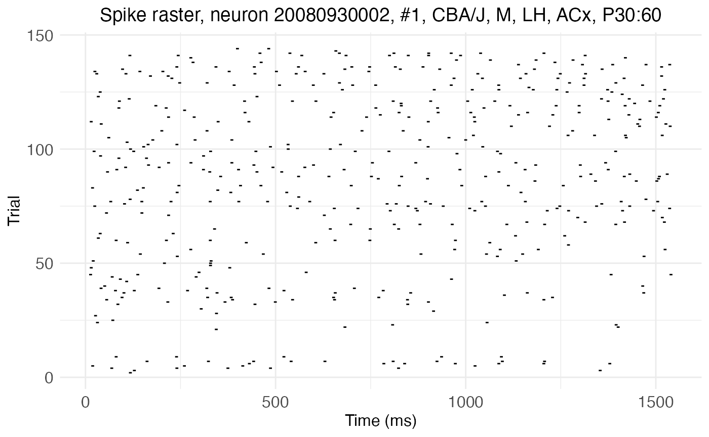
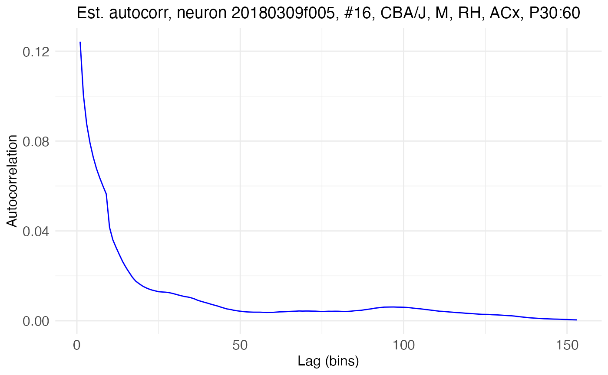
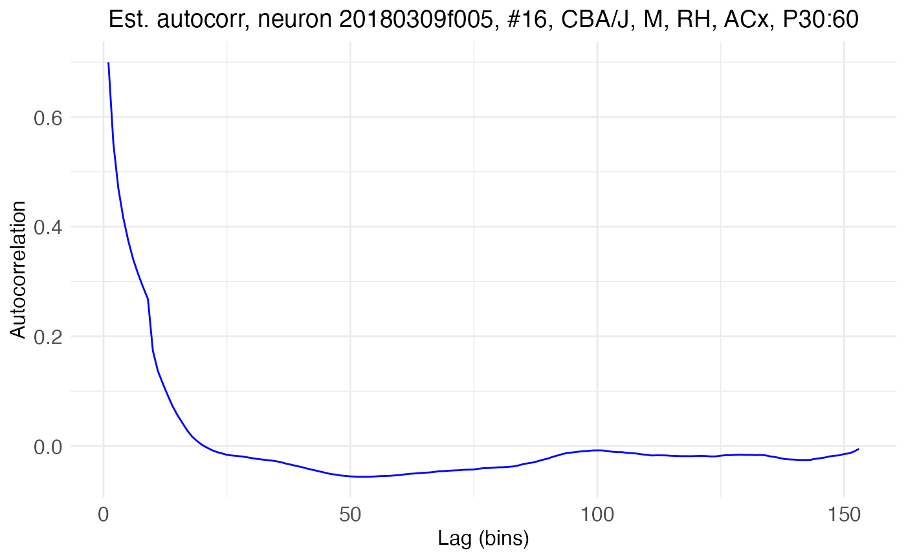
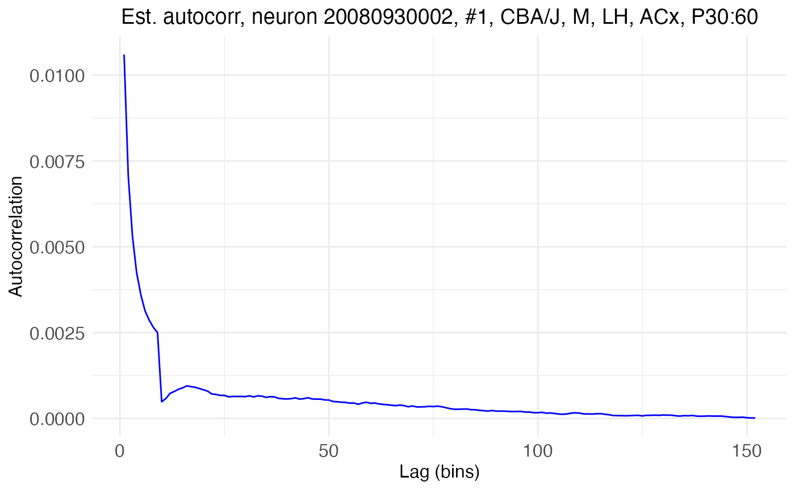
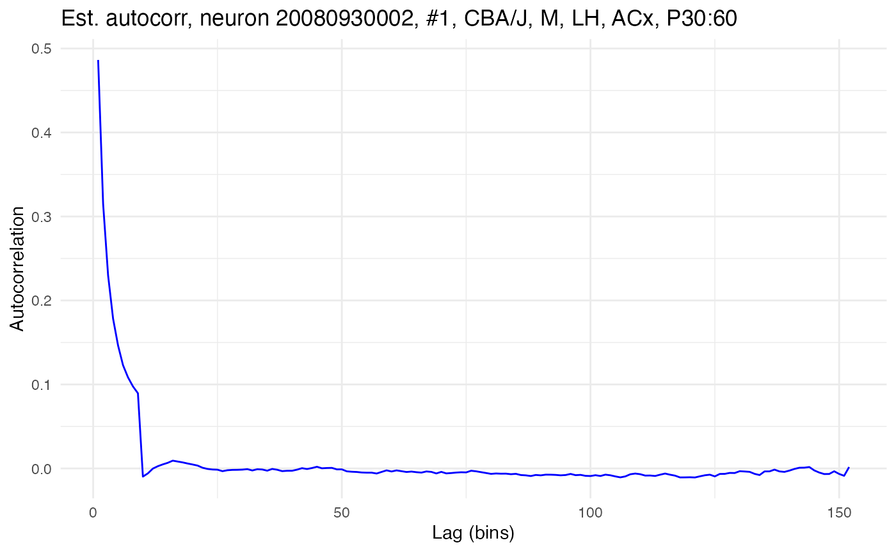

Network time constants via dichotomized Gaussians
Michael Barkasi
2026-04-19
tutorial_tau_est_DG.RmdIntroduction
The extent to which an individual neuron feeds back on itself in a recurrent loop can be estimated by its autocorrelation, i.e., the correlation between the neuron’s membrane potential v at time t_1 and at a later time t_2>t_1. The more a spike now increases the probability of a spike later, the stronger the neuron’s connection back onto itself. A neuron’s autocorrelation, represented by the variable R, can be modeled with an exponential decay function R = A\exp(-l/\tau) + b where A is the amplitude (autocorrelation at the initial lag), l is lag, \tau is the network time constant, and b is a constant (bias or baseline) term. The time constant \tau is a measure of how quickly the neuron’s autocorrelation decays back to baseline after a spike.
Network time constants are difficult to estimate from experimental data. The spiking activity of a neuron is indicative of its recurrence only if that neuron is receiving no other input. Thus, time constants must be estimated from periods of spontaneous activity. These periods are short and noisy, making time constant estimates from empirical calculations of a neuron’s autocorrelation unreliable. A way to improve the signal-to-noise ratio is needed, such as simulating many recordings. However, typical approaches to such simulations, such as bootstrapping, will only amplify the noise. A better approach is to use dichotomized Gaussians.
This tutorial shows how to use the neurons package to estimate network time constants using dichotomized Gaussians. Patch-clamp recordings will be used as an example dataset. The recordings are from layer 2/3 of the auditory cortex of mature wildtype mice, in both the left and right hemisphere. These recordings are used by Neophytou et al. 2022, who adapt and apply the dichotomized Gaussian approach of Macke et al. 2009 to show that the right auditory cortex of mice has more recurrence than the left. This tutorial reproduces that analysis, with a few improvements.
Load spike rasters
Set up the R environment by clearing the workspace, setting a random-number generator seed, and loading the neurons package.
# Clear the R workspace to start fresh
rm(list = ls())
# Set seed for reproducibility
set.seed(12345)
# Load neurons package
library(neuronsDG, quietly = TRUE) All of the data is contained in a single csv file, provided with the neurons package, as a compact spike raster.
spike.rasters <- read.csv(
system.file(
"extdata",
"spike_rasters_2022data.csv",
package = "neurons"
)
)
print(head(spike.rasters))## trial sample cell time_in_ms recording_name hemi genotype sex age region
## 1 2 1181 1 118.1 20080930002 LH CBA/J M P30:60 ACx
## 2 3 1286 1 128.6 20080930002 LH CBA/J M P30:60 ACx
## 3 3 13537 1 1353.7 20080930002 LH CBA/J M P30:60 ACx
## 4 4 691 1 69.1 20080930002 LH CBA/J M P30:60 ACx
## 5 4 2404 1 240.4 20080930002 LH CBA/J M P30:60 ACx
## 6 4 3746 1 374.6 20080930002 LH CBA/J M P30:60 ACxThe data takes the form of a dataframe the rows of which each represent a single recorded spike. Each column gives relevant metadata, such as the time in the recording of the spike, the identity of the neuron that fired the spike, and the hemisphere in which that neuron was recorded. The function load.rasters.as.neurons() will convert a compact raster of spikes like this one (a dataframe or file name to a csv importable as such) into neuron objects (one per cell), so long as it has the recognized columns: cell, time_in_ms, and trial. If the optional columns recording_name, hemisphere, genotype, sex, region, or age are included, they will be recognized and added as metadata to the neuron objects.
neurons <- load.rasters.as.neurons(spike.rasters, bin_size = 10.0)
cat("Number of cells discovered:", length(neurons))## Number of cells discovered: 41The neuron object class is native to C++ and integrated into neurons (an R package) via Rcpp. It comes with built-in methods for many tasks, such as estimating autocorrelation parameters with dichotomized Gaussian simulations. Some of these methods can be accessed through R, but neurons provides R-native wrappers for the most useful ones. The neurons package also provides native R functions for plotting. Let’s plot the rasters for two cells. The first has high autocorrelation, as can be seen from the long horizontal streaks of spikes:
cell_high <- 16
plot.raster(neurons[[cell_high]]) 
The second has low autocorrelation, as can be seen from the more random distribution of spikes without long streaks:
cell_low <- 1
plot.raster(neurons[[cell_low]]) 
Computing empirical autocorrelation from data
There are two common definitions for the correlation R_{XY} between two random variables X and Y. Let \text{E}[X], \text{E}[Y], and \text{E}[XY] be the expected values of X, Y, and their product XY. The first definition, the raw correlation, is: R_{XY} = \text{E}[XY] The second, the Pearson correlation, centers and normalizes the raw correlation: R_{XY} = \frac{\text{E}[XY] - \text{E}[X]\text{E}[Y]}{\sqrt{\text{E}[X^2] - \text{E}[X]^2}\sqrt{\text{E}[Y^2] - \text{E}[Y]^2}} While only the Pearson correlation will return values constrained to the range [-1,1], the raw correlation is well-defined for a broader range of cases, including cases where empirical estimates need to be made from observations with little to no variance, such as spike rasters with low firing rates.
The above equations are for theoretical population values, given in terms of the expected value operator. Both definitions have empirical analogues which can be used to calculate a value directly from a finite sample. If \vec{X}=\langle X_1,\ldots,X_T\rangle and \vec{Y}=\langle Y_1,\ldots,Y_T\rangle are each a series of observations collected from X and Y, then the empirical raw correlation is given in terms of the dot product: R_{XY} = \frac{\vec{X}\cdot\vec{Y}}{T} = \frac{1}{T}\sum_{i=1}^T X_i Y_i If \mu_{\vec{XY}} is the empirical mean of the vector \vec{XY} of products X_iY_i, the raw correlation can also be computed as R_{XY} = \mu_{\vec{XY}}. The empirical Pearson correlation between \vec{X} and \vec{Y} with means \mu_{\vec{X}} and \mu_{\vec{Y}} and standard deviations \sigma_{\vec{X}} and \sigma_{\vec{Y}} is given by: R_{XY} = \frac{\mu_{\vec{XY}} - \mu_{\vec{X}}\mu_{\vec{Y}}}{\sigma_{\vec{X}} \sigma_{\vec{Y}}} For ease of reading, the vector notation will hereafter be dropped and capital letters will be used to refer to both the random variables and their empirical samples, with the understanding that the context will make clear which is meant.
Time series and repeated observations
If X is a time series X=\langle{}X_1, \ldots, X_t, \ldots, X_T\rangle{}, then its autocorrelation at lag l, denoted R_{XX}(l), is the correlation R_{XY} between X and a copy Y=\langle{}X_{l+1}, X_{l+2}, X_{l+3}, \ldots \rangle{} of X time shifted by some lag l. This lagged copy will be shorter than X by l samples, so computing the empirical autocorrelation requires adjusting the summation index and the normalization term accordingly. For example, the empirical raw autocorrelation at lag l is given by: R_{XX}(l) = \frac{1}{T-l}\sum_{i=1}^{T-l} X_i Y_{i+l} If X and Y are matrices containing many trials (columns) of sample series (rows) of data collected from the random variables X and Y, then the empirical correlation between X and Y can be refined by averaging together the correlations computed for each trial. For example, the empirical raw autocorrelation at lag l is given by: R_{XX}(l) = \frac{1}{N}\sum_{j=1}^N \frac{1}{T-l}\sum_{i=1}^{T-l} X_{ij} Y_{(i+l)j} where N is the number of trials (columns) in X and Y.
Time binning
The neuron object class has built-in methods for computing both the raw and Pearson empirical autocorrelation from a spike raster S, which is (of course) just a matrix for a random variable (spike or no-spike) sampled over time (rows) and trials (columns). The variable S is discrete, with only two possible values: 1 for a spike, 0 for no spike. This binary nature means that S does not play nicely with any of the empirical formulas given above. If given the raw binary input, these formulas will return zero or near zero autocorrelation.
For more cogent results, the rows (i.e., the time axis) of the matrix S must be downsampled via binning. This binning is done automatically by the function load.rasters.as.neurons() and can be controlled via its argument bin_size, which below is represented by \Delta. The default, used in the code above, is 10ms.
A further question to decide when computing empirical autocorrelation is how to handle multiple spikes in a single bin. There are three options supported by the neurons package: “sum”, “mean”, and “boolean”. The option is set via the argument bin_count_action, available in the functions compute.autocorr(), process.autocorr(), and estimate.autocorr.params(). In all cases, the default is “sum”, meaning that the value of S in a given bin on a given trial is the total count of spikes falling in that bin. The option “mean” will instead return the mean number of spikes in the bin, while “boolean” will return 1 if there is at least one spike in the bin and 0 otherwise. From ad hoc development and testing, the “sum” function works best, presumably because it preserves the most information about correlation.
Time binning introduces a dilemma. On the one hand, it’s essential for avoiding autocorrelation values of zero. On the other hand, it violates a key mathematical fact underlying the dichotomized Gaussian approach. This is the fact, explained below, that: \text{E}[X_{i_1}X_{i_2}]=\Phi_2^+(\gamma,K_{V_{i_1}V_{i_2}}) Hence, the best approach seems to be a middle path. A large time bin, such as 20ms, results in robust autocorrelation estimates from the spike data, but leads to unreliable dichotomized Gaussian simulations. A small time bin, such as 1ms, leads to unreliable empirical autocorrelation estimates, but reliable dichotomized Gaussian simulations. The default (10ms) falls in the middle. Whatever the chosen bin size, a rolling mean is taken to smooth the empirical autocorrelation value.
Example autocorrelation calculations
The function compute.autocorr() takes a single neuron and computes its empirical autocorrelation using its spike raster. Here, for example, is the function used to compute the raw autocorrelation for the neuron with high autocorrelation shown above:
compute.autocorr(neurons[[cell_high]], use_raw = TRUE)
plot.autocorrelation(neurons[[cell_high]])
Which type of correlation, raw or Peason, is calculated is controlled by the use_raw option. The Pearson autocorrelation for the same data can be got by setting use_raw to FALSE:
compute.autocorr(neurons[[cell_high]], use_raw = FALSE)
plot.autocorrelation(neurons[[cell_high]])
As another example, here is the raw autocorrelation for the neuron with low autocorrelation shown above:
compute.autocorr(neurons[[cell_low]], use_raw = TRUE)
plot.autocorrelation(neurons[[cell_low]])
And the Pearson autocorrelation for the same data:
compute.autocorr(neurons[[cell_low]], use_raw = FALSE)
plot.autocorrelation(neurons[[cell_low]])
Modeling autocorrelation decay
Theoretically, autocorrelation can be expected to exhibit exponential decay over increasing lag, at least in cases with nonzero autocorrelation. As noted above, this decay can be modeled with the function: R = A\exp(-l/\tau) + b where A is the amplitude (autocorrelation at the initial lag), l is lag, \tau is the network time constant, and b is a constant (bias or baseline) term. The neurons package assumes that the bias term b is a constant function of the firing rate \lambda and bin size \Delta, given as: b = (\lambda{}\Delta)^2 In this formula both \lambda and \Delta must be in the same unit of time, e.g., ms. The values for A and \tau are set by minimizing the mean squared error between the empirical autocorrelation and the model function, using the L-BFGS algorithm as implemented in NLopt.
Model fitting is accessed in the neurons package with the function fit.edf.autocorr(). The function takes a single neuron and fits the exponential decay function to its empirical autocorrelation. Here, for example, is the function used to fit the model to the raw autocorrelation for the neuron with high autocorrelation:
compute.autocorr(neurons[[cell_high]]) # Recompute with raw autocorrelation
fit.edf.autocorr(neurons[[cell_high]])
plot.autocorrelation(neurons[[cell_high]])
The fitted model is plotted as the red line. The parameters of the exponential decay fit can be fetched directly with a neuron method and provide succinct quantification of the empirical autocorrelation.
print(neurons[[cell_high]]$fetch_EDF_parameters())## A tau bias_term
## 0.12690314 69.37772012 0.01105918In this case, the time constant tau is estimated to be 69.4ms and the initial autocorrelation A is estimated to be 0.127.
The above shows empirical autocorrelation and model fit being performed in separate steps and for only one neuron at a time. The function process.autocorr() will perform both steps at once for an entire list of neurons and return the results in a data frame.
autocor.results.batch <- process.autocorr(neurons)
print(head(autocor.results.batch))## cell lambda_ms lambda_bin A tau bias_term autocorr1 max_autocorr mean_autocorr min_autocorr
## 1 neuron_1 0.0021196442 0.021196442 0.012310361 37.43632 4.492891e-04 0.012759650 0.009873868 0.0007344238 4.492891e-04
## 2 neuron_2 0.0003823936 0.003823936 0.002574664 33.53497 1.462249e-05 0.002589286 0.001925424 0.0000671805 1.462249e-05
## 3 neuron_3 0.0036099494 0.036099494 0.021596412 64.56348 1.303173e-03 0.022899585 0.019800771 0.0022174598 1.303173e-03
## 4 neuron_4 0.0017867616 0.017867616 0.010522253 47.95608 3.192517e-04 0.010841505 0.008861022 0.0006411112 3.192517e-04
## 5 neuron_5 0.0096557914 0.096557914 0.075155978 31.09102 9.323431e-03 0.084479409 0.063808644 0.0107283990 9.323431e-03
## 6 neuron_6 0.0087146980 0.087146980 0.045516247 38.10554 7.594596e-03 0.053110843 0.042604825 0.0086703283 7.594596e-03Estimating network time constants
The above discussion concerns computing and modeling empirical autocorrelation, i.e., autocorrelation as computed directly off a finite sample. However, what’s usually desired is an estimate of the population value, i.e., the true autocorrelation exhibited by a population of cells defined by some shared covariate value. Estimating this true value is done by taking an infinite sample, sampling not just all existing population members, but also all possible members. This is, of course, impossible. However, it can be approximated by taking larger and larger samples. The ideal, of course, would be to take samples of the actual population, e.g., recording more cells, or recording more trials from the same cells. However, in practice this is not possible. Instead, mathematical techniques are used to simulate larger samples from existing data. The most well-known technique is bootstrapping, i.e., “resampling” the observed data with replacement. Bootstrapping does a good job perserving the underlying statistical distribution of data when the signal-to-noise ratio is high, but when the signal-to-noise ratio is low, bootstrapping will simply amplify the noise. This is the case with autocorrelation estimated from spike rasters, especially when the firing rate is low and the recording time is short.
Dichotomized Gaussians
Instead of resampling with replacement, an alternative approach is to simulate new samples through a random-process model that’s constrained to be consistent with the observed data. In the case of exponentially decaying autocorrelation, dichotomized Gaussians provide an ideal model. The basic idea is to model the noisy processes underlying neuron spiking across time as a latent multivariate Gaussian process, with one Gaussian distribution per time bin. On this model, autocorrelation is modeled as correlation between these Gaussians.
Consider the following example of a dichotomized Gaussian. First, let’s draw a random sample of 300 points from a bivariate Gaussian distribution V, such that both component distributions V_1 and V_2 are normal (i.e., have mean \mu of 0 and standard deviation \sigma of 1) and such that a covariance K_V of 0.75 exists between these distributions.
V_sample <- MASS::mvrnorm(
n = 300,
mu = c(0,0),
Sigma = matrix(
c(1, 0.75,
0.75, 1),
nrow = 2,
ncol = 2
)
)Next, let’s plot these points and superimpose on top of them thresholds \gamma = 1 for both dimensions, shading the area of points below the threshold.
# Convert to data frame for plotting
V_sample <- as.data.frame(V_sample)
threshold <- 1
# Make and print plot
ggplot2::ggplot(data = V_sample, ggplot2::aes(x = V_sample[,1], y = V_sample[,2])) +
ggplot2::geom_point() +
ggplot2::labs(
x = "V1",
y = "V2",
title = "Example bivariate data") +
ggplot2::ylim(c(-4.5,4.5)) +
ggplot2::xlim(c(-4.5,4.5)) +
ggplot2::theme_minimal() +
ggplot2::theme(
panel.background = ggplot2::element_rect(fill = "white", colour = NA),
plot.background = ggplot2::element_rect(fill = "white", colour = NA)) +
ggplot2::geom_vline(xintercept = 0, color = "darkgray", linewidth = 1) +
ggplot2::geom_hline(yintercept = 0, color = "darkgray", linewidth = 1) +
ggplot2::geom_vline(xintercept = threshold, color = "darkblue", linewidth = 1) +
ggplot2::geom_hline(yintercept = threshold, color = "darkblue", linewidth = 1) +
ggplot2::annotate(
"rect",
xmin = -Inf, xmax = threshold,
ymin = -Inf, ymax = threshold,
fill = "lightblue", alpha = 0.3) +
ggplot2::annotate(
"text", x = threshold + 0.35, y = 4.5,
label = "gamma", parse = TRUE, color = "darkblue",
size = 7, hjust = 0) +
ggplot2::annotate(
"text", x = 4.5, y = threshold + 0.35,
label = "gamma", parse = TRUE, color = "darkblue",
size = 7, vjust = 0)
Notice how a threshold value \gamma defines, for any V_i, a new binary random variable X such that X=1 if V_i>\gamma and X=0 otherwise. The variable X is the “dichotomized Gaussian”.
Simulating spike rate
If X is a dichotomized Gaussian, the probability P(X=1) that X is 1 is given by the cumulative distribution function of V_i evaluated at \gamma. As each V_i is stipulated to be a standard normal (\mu=0 and \sigma=1), this cumulative distribution function is the standard normal cumulative distribution function \Phi: \Phi(x) = \frac{1}{\sqrt{2\pi}} \int_{-\infty}^x \exp(-t^2/2) dt Thus: P(X=1) = P(V_i>\gamma) = 1 - \Phi(\gamma) In the above plot, the function \Phi(\gamma) corresponds to the shaded area of each axis, while 1 - \Phi(\gamma)=P(X=1) corresponds to the non-shaded area.
It follows that V_i can be used to simulate a neuron with mean spike rate \lambda by setting the threshold \gamma such that: \lambda = 1 - \Phi(\gamma) which means that: \gamma = \Phi^{-1}(1-\lambda) where \Phi^{-1} is the inverse of \Phi, i.e., is the quantile function. This quantile function can be computed via well-known numerical approximations, meaning that a dichotomized Gaussian can easily be used to simulate a neuron with a desired mean spike rate \lambda.
Simulating autocorrelation
While simulating a given spike rate \lambda is straightforward, simulating autocorrelation is not. How is autocorrelation to be represented in the model? If the correlation between two component dimensions V_{i_1} and V_{i_2} of a multivariate Gaussian is to represent the autocorrelation between two time bins X_{i_1} and X_{i_2} of a spike raster separated by lag l, then each V_i should not be thought of as a separate neuron, but rather as the same neuron at different time points.
While this is an insightful idea, the operation of thresholding, needed to convert a Gaussian variable V_i into a simulated binary spike variable X_i, will change the correlation: R_{V_{i_1}V_{i_2}} \neq R_{X_{i_1}X_{i_2}} However, all is not lost. Given some autocorrelation R_{X_{i_1}X_{i_2}} between two time bins X_{i_1} and X_{i_2} separated by lag l for a neuron X with spike rate \lambda, a correlation R_{V_{i_1}V_{i_2}} can often be found which, when these variables V_i are thresholded by \gamma = \Phi^{-1}(1-\lambda), gives back the original correlation R_{X_{i_1}X_{i_2}}. Actually, in this case, it’s the covariance K_{V_{i_1}V_{i_2}} that is sought. Knowing the correlation R_{V_{i_1}V_{i_2}} is not critical, although because V is normal, R_{V_{i_1}V_{i_2}} = K_{V_{i_1}V_{i_2}}.
By definition, the covariance K_{X_{i_1}X_{i_2}} is given by: K_{X_{i_1}X_{i_2}}= \text{E}[X_{i_1}X_{i_2}] - \text{E}[X_{i_1}]\text{E}[X_{i_2}] For all i, \text{E}[X_{i}] = P(V_{i}>\gamma)=1-\Phi(\gamma) Further, notice that the expected value of the product X_{i_1}X_{i_2} is given by the upper-tail cumulative distribution function of a bivariate normal distribution with covariance K_{V_{i_1}V_{i_2}}, evaluated at \gamma for both components: \text{E}[X_{i_1}X_{i_2}] = \Phi_2^+(\gamma,K_{V_{i_1}V_{i_2}}) For a threshold x, \Phi_2^+(x,K_{V_{i_1}V_{i_2}}) is the probability that both components of a bivariate normal distribution with covariance K_{V_{i_1}V_{i_2}} are greater than x: \begin{aligned} &\Phi_2^+(x,K_{V_{i_1}V_{i_2}}) \\ &\;\;\;= P(V_1>x, V_2>x \;|\; V_1, V_2\sim \text{MVN}(\mu=0,\sigma=1,K=K_{V_{i_1}V_{i_2}})) \\ &\;\;\;= \frac{1}{\sqrt{(2\pi)^2\mathbf{det}(K_{V_{i_1}V_{i_2}})}} \int_{x}^\infty \int_{x}^\infty \exp(-\frac{1}{2}\langle V_{i_1}V_{i_2}\rangle^\text{T}K_{V_{i_1}V_{i_2}}^{-1}\langle V_{i_1}V_{i_2}\rangle) \langle V_{i_1}V_{i_2}\rangle \end{aligned}Putting it all together: K_{X_{i_1}X_{i_2}} = \Phi_2^+(\gamma,K_{V_{i_1}V_{i_2}}) - (1-\Phi(\gamma))^2 Thus, the covariance K_{V_{i_1}V_{i_2}} between V_{i_1} and V_{i_2} which, after dichotomization, yields covariance K_{X_{i_1}X_{i_2}}, can be found by solving for K_{V_{i_1}V_{i_2}} in the equation: 0=K_{X_{i_1}X_{i_2}} - \Phi_2^+(\gamma,K_{V_{i_1}V_{i_2}}) + (1-\Phi(\gamma))^2 The neurons package solves this equation for K_{V_{i_1}V_{i_2}} using a root bisection algorithm.
The only remaining task is to determine the covariance needed for a given desired autocorrelation. This is straightforward from the definitions of each type of correlation. For raw autocorrelation: K_{X_{i_1}X_{i_2}} = R_{X_{i_1}X_{i_2}} - \lambda^2for \lambda in time units of bin. For Pearson autocorrelation: K_{X_{i_1}X_{i_2}} = R_{X_{i_1}X_{i_2}}\sigma_X^2where \sigma_X^2 is the variance of X, again in bin units.
Running and bootstrapping simulations
The function estimate.autocorr.params() takes a list of neurons and:
- Computes the empirical autocorrelation of each neuron.
- Fits an exponential decay model to that empirical autocorrelation.
- Generates many simulated spike trains (dichotomized Gaussians) based on the values R_{XX} predicted by the model of the empirical autocorrelation and the observed firing rate \lambda of the neuron.
- Computes the empirical autocorrelation of each simulated spike train.
- Fits an exponential decay model to the empirical autocorrelation of each simulated spike train.
This procedure yields a distribution of possible \tau values for each neuron. For the purpose of speed, this tutorial runs only 100 simulations per neuron, but in practice, 1000 or more simulations should be run.
autocor.ests <- estimate.autocorr.params(
neuron_list = neurons,
n_trials_per_sim = 500,
n_sims_per_neurons = 100,
use_raw = TRUE
)
print(head(autocor.ests$estimates))## lambda_ms lambda_bin A tau bias_term autocorr1 max_autocorr mean_autocorr min_autocorr
## 1 0.01480282 0.1480282 0.01135389 29.60453 0.0002191234 0.01157302 0.008318400 0.0004195115 0.0002191234
## 2 0.01777465 0.1777465 0.01307888 32.77918 0.0003159381 0.01339481 0.009955992 0.0005759667 0.0003159381
## 3 0.01730986 0.1730986 0.01259854 33.58607 0.0002996312 0.01289817 0.009653952 0.0005572653 0.0002996312
## 4 0.01904225 0.1904225 0.01415649 38.63070 0.0003626074 0.01451909 0.011290424 0.0007024252 0.0003626074
## 5 0.01616901 0.1616901 0.01183272 34.95299 0.0002614370 0.01209416 0.009150043 0.0005148006 0.0002614370
## 6 0.01540845 0.1540845 0.01177011 29.77690 0.0002374204 0.01200753 0.008650034 0.0004465796 0.0002374204With the simulations run, the final step is to estimate the network time constant for covariates of interest. The function analyze.autocorr() does this by bootstrapping over the tau values obtained from the simulations. If there are n neurons in a covariate level, m simulations have been run per neuron, then each bootstrap resample consists of the mean of n draws with replacement from the pool of nm values for \tau. For this tutorial, 10k bootstrap resamples are used.
autocor.results.bootstraps <- analyze.autocorr(
autocor.ests,
covariate = c("hemi","genotype"),
n_bs = 1e4
)The function analyze.autocorr() returns a list with two objects. The first is resamples, a dataframe holding the tau values for each covariate from each simulation.
## LH_CBA/J RH_CBA/J
## 1 56.73363 53.67913
## 2 50.86373 56.29508
## 3 47.13767 51.25537
## 4 53.21613 48.99225
## 5 53.31073 59.97263
## 6 52.45779 56.65133The second is distribution_plot, a ggplot2 object visualizing the bootstrap distributions of tau for each covariate.
print(autocor.results.bootstraps$distribution_plot)
Code summary
The essential steps to run this analysis are as follows:
# Setup
rm(list = ls())
set.seed(12345)
library(neurons)
# Load demo data
spike.rasters <- read.csv(
system.file(
"extdata",
"spike_rasters_2022data.csv",
package = "neurons"
)
)
# Create neuron objects
neurons <- load.rasters.as.neurons(spike.rasters, bin_size = 10.0)
# Run dichotomized Gaussian simulations
autocor.ests <- estimate.autocorr.params(
neuron_list = neurons,
n_trials_per_sim = 500,
n_sims_per_neurons = 100,
use_raw = TRUE
)
# Analyze results by covariate
autocor.results.bootstraps <- analyze.autocorr(
autocor.ests,
covariate = c("hemi","genotype"),
n_bs = 1e4
)